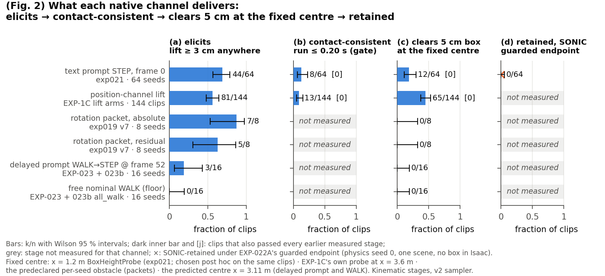
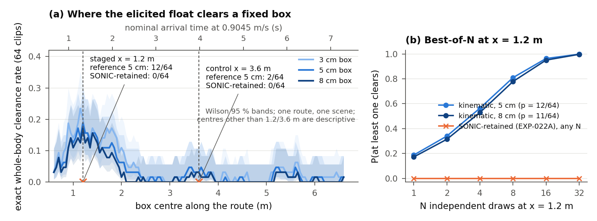
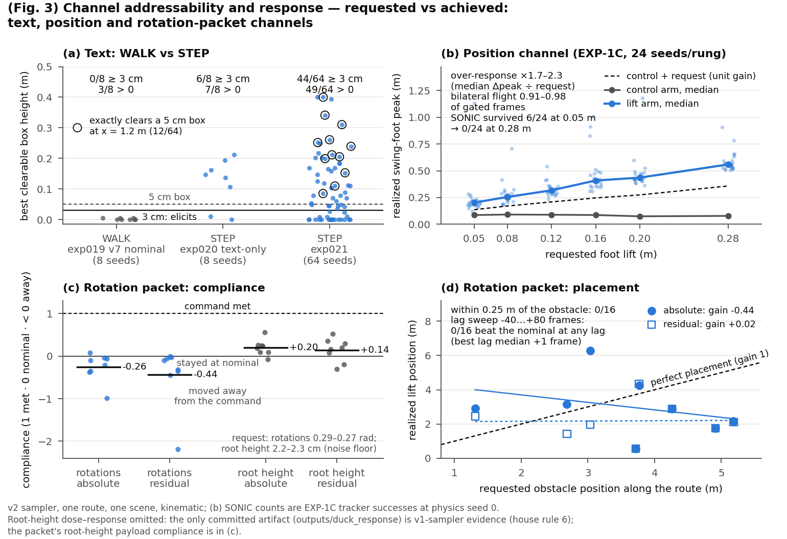
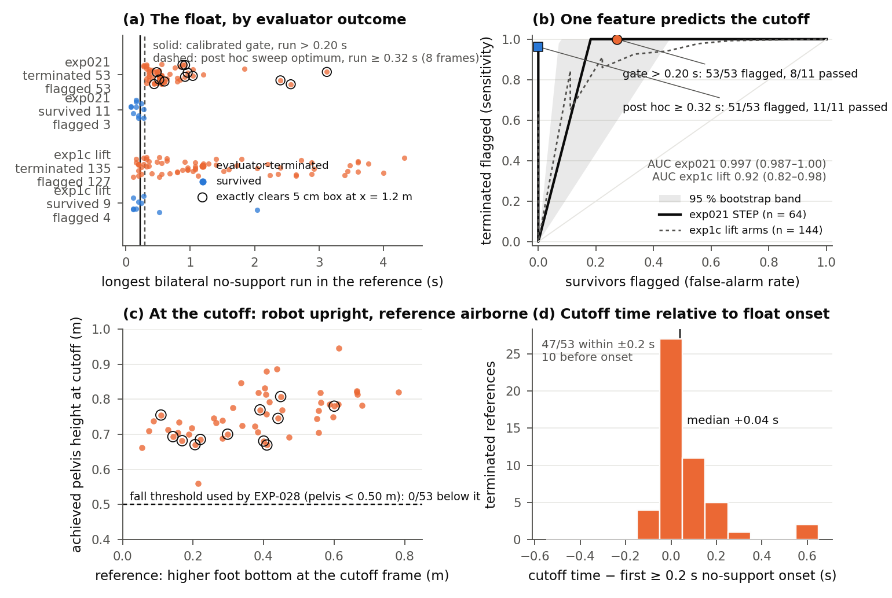
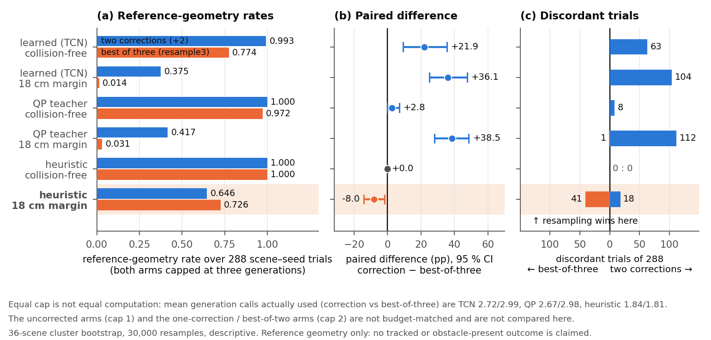
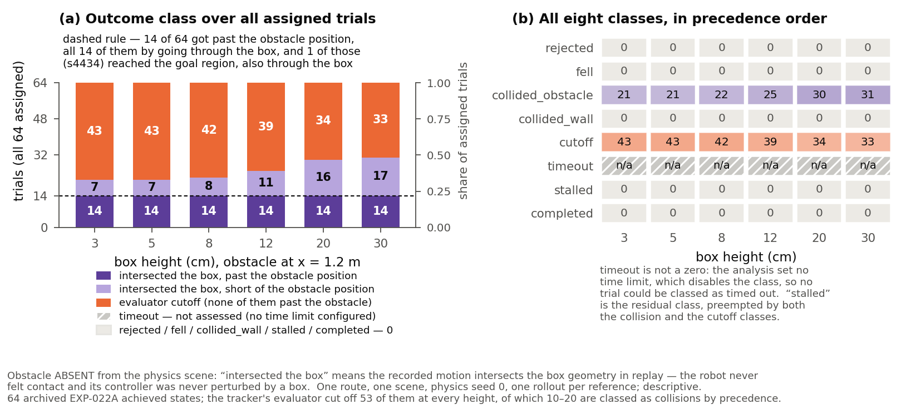
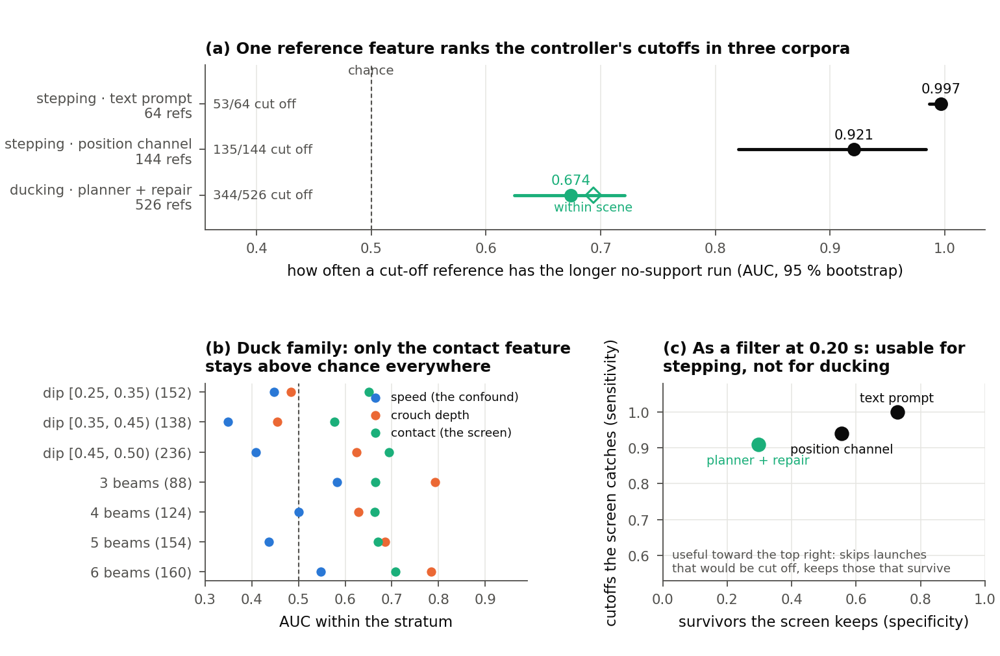

A humanoid can execute a convincing step-over and still walk straight into the box, because the step happened two metres earlier. Traversing an obstacle takes more than a plausible motion or accurate tracking: the clearance has to appear where the scene puts the obstacle, and survive being tracked. Scene2Motion measures that chain with a released motion model (NVIDIA ARDY-G1) and a released whole-body controller (SONIC) on the Unitree G1, both frozen.
outputs/exp030_obstacle_present/summary.json → arms.present_05.local_traversal_completion.completed, arms.present_20.…, ….wilson95, ….n_assigned_trials.
A box 0.20 m deep and 2.8 m wide lies across a corridor at x = 1.2 m. A Unitree G1 starts at the origin facing down the corridor; the goal is 7.2 m away, reached within 0.5 m, and the corridor is 1.4 m of half-width on either side of the centre line.
Which generated motions can this controller use to get through this obstacle, from this starting state?
Pass through the specified corridor, finish beyond the box, collision-free and upright, reaching within 0.5 m of the goal after passing. Walking around the box is a failure here, not a clever solution. No wall-clock deadline was preregistered, so nothing failed on time and the timeout class is not assessed.
Reach a destination through a scene, where going around an obstacle is often the right answer. It adds route choice, transitions between motions, replanning and recovery. Nothing on this page is a navigation result, and the two never share a success label.
Scene geometry from outputs/exp030_obstacle_present/receipt.json → design.obstacle.{depth_m, width_m, x_m} and design.scene.{start_xy_m, goal_xy_m, goal_tolerance_m, corridor_half_width_m}; the completion definition above paraphrases that campaign's own summary.arms.*.local_traversal_completion.definition, which reads verbatim: “passed the obstacle inside the corridor (|y| ≤ 1.4 m), reached within 0.5 m of the goal at 7.2 m after passing, collision-free and upright; walking around does not count and this is not navigation”. It carries no time limit: summary.scene.time_limit_s is null.
A collision-free reference, a completed tracking run and a completed traversal are different results. One is never allowed to stand in for the next, and every number on this page belongs to exactly one rung.
The ducking family sits at different rungs: its reference geometry improves under correction (72.9 % → 99.3 % collision-free for the learned proposer), its tracked endpoint is 0 of 859 rollouts under a protocol confounded by a 14 s clip cap, and it has never been run with the beam present. Rates are over all assigned trials, so a rule that rejects every candidate scores zero completions rather than looking perfect.
These three panels are the same generated reference tracked three times by the same controller from the same physics seed. Only the box changes: absent, 5 cm, 20 cm, at the position the scene specifies. Every frame is an archived achieved state replayed in MuJoCo — nothing was re-simulated for the video. The box is in the Isaac scene in the two right-hand panels, so those rollouts were physically obstructed; the outcome label is still a whole-body geometry check on the archived states against that box inflated by the 4 cm body margin.
docs/media/manifest.json → clips.{absent, present_05, present_20}, which binds outputs/exp030_obstacle_present/receipt.json (sha256 86209c94…) and the per-arm achieved-state archives; every value also stands on its own in the committed rows, outputs/exp030_obstacle_present/rows.jsonl → the three motion_key = "s4434" rows, traversal.{outcome, obstacle_max_penetration_m, duration_s} and max_root_x_m.| panel | box in the physics scene | outcome class | margin first entered | maximum overlap, margin-inflated box | archived duration | furthest root x |
|---|---|---|---|---|---|---|
| left | none (control arm) | completed the route | — | — | 7.94 s | 7.63 m |
| middle | 5 cm at x = 1.2 m | contacted the obstacle | 1.26 s | 0.036 m | 7.94 s | 7.64 m |
| right | 20 cm at x = 1.2 m | contacted the obstacle, then evaluator cutoff | 1.28 s | 0.067 m | 1.36 s | 1.51 m |
This reference was chosen, not sampled. The rule was fixed in the manifest: among the references whose 20 cm rollout ended in obstacle contact and that travelled at least 1.0 m further in the obstacle-absent arm, take the one that got furthest in that arm — 11 references were eligible and s4434 ranked first (docs/media/manifest.json → selection.{rule, eligible_count, ranking_top5}). It is the clearest illustration in the pool, not a typical one, and the pool-wide counts are in the next four sections. The box is drawn at true size; the collision metric inflates the same box by a 4 cm body margin, which the renderer does not show.
Before the controller ever sees a reference, the reference has to put its clearance at the box. These two panels are the same generated clip, frame for frame, rendered from the released G1 model with the scored box in the world. Only the box moves.
Seed 4437 under the prompt “A person steps over an obstacle.” The step comes early, as it usually does, and reaches the 0.40 m cap of the height probe — one of only two clips in the 64 that do. The box was placed after watching the clip, so this is a capability illustration and not a placement result.
Identical motion, box moved to a mid-route position a scene would specify. The lift is metres away and nothing clears. Producing a stepping motion does not make it happen at the box.
The same route under “A person walks forward.” The tallest box the whole body clears anywhere on the route is 5 mm, and 0 of 8 seeds reach the 3 cm definition. A zero here is the correct floor, and it is what makes the prompted counts attributable to the prompt.
Seed 4353 with a phase-aligned rotation request. A step appears — 3.17 m from the obstacle it was anchored to. Across the arm, 0 of 16 clips land within 0.25 m of the request.
Clips are archived joint trajectories from committed campaign archives, rendered by experiments/export_demo_motions.py and experiments/render_demo_videos.py; the per-clip measurements above are read from docs/figures/fig3_channel_response_numbers.json, whose own inputs are the campaign receipts. None of these four is a tracking result: they show what the model generates, before any controller is involved.
The behaviour is produced readily. It is almost never produced at the box. We measure clearance at the position the scene specifies, not anywhere along the route, because a motion can clear the same obstacle somewhere else on its path — and that difference is the project's first result.
37 against 12 at the same box height is the gap. The cause is spread, not weakness: across the 49 clips that have a location of maximum clearance at all — the other 15 never clear anything — that location has a median of 1.24 m and a standard deviation of 1.04 m, with a q10–q90 span of 0.73–1.97 m (receipt). Where the box is does not move it.

docs/figures/fig2_channel_funnel_numbers.json → channels[*].stages.Among the 49 references with any positive clearance along the route, the reference root reaches the location of maximum clearance after a median of 1.4 s (frame 35; q10–q90 20.8–55.4 frames), with 40 of 49 inside the first 50 frames (Wilson 0.686–0.900) and 4 of 49 after frame 60. Under the route-nominal speed conversion the count is 42 of 49 (B_nominal_speed_real). This is the root arriving at a location — not a detected foot-crossing event.

docs/figures/fig4_numbers.json; source receipt outputs/analysis_exact_centre_cost_curve/receipt.json.docs/figures/fig3_channel_response_numbers.json → panel_b_position, panel_c_packet_compliance, panel_d_packet_placement for the response and placement figures; the clearance count is docs/figures/fig2_channel_funnel_numbers.json → channels[rotation_packet_absolute, rotation_packet_residual].stages.clears (k = 0 of n = 8 each), from outputs/exp019_gait_matched_stepover_v7/placement_analysis.json → rows[arm ∈ {absolute, residual}].graded_clearance.
docs/figures/fig3_channel_response_numbers.json records which panels were drawn and which were omitted for want of a committed v2-sampler artifact.Switching the prompt from walking to stepping at frame 52, through the released minimum-history interface, produced the step in 3 of 8 fresh seeds where an earlier run of the same arm produced none — pooled, 3 of 16, against 6 of 8 when the prompt is given from the first frame. The step arrives 21, 45 and 75 frames after the switch (0.84 s, 1.8 s, 3.0 s at 25 fps), and 0 of 8 clear a box at any tested height at the centre predicted for the switch. On that evidence we withdrew our earlier claims that a later prompt does not elicit the step and that the step is tied to the start of the rollout. What survives: a delayed prompt elicits it less often, later, and unplaced. The handoff does transmit — post-switch joint angles differ from the walking arm by a median 0.20 rad RMS (0.13–0.30 across the eight seeds).
A positive control we refused rather than reinterpreted. The same campaign was designed around a sideways-squeeze prompt as its positive control, and its substrate gate failed: under a dense route constraint the squeeze prompt produced a sidestep in 0 of 8 seeds against a required minimum of 4, by the preregistered composite of heading deviation, lateral excursion and foot crossing. It produced a lifting gait instead — 5 of 8 seeds lift, 2 of 8 clear a 5 cm box at the predicted position. The campaign's status in its own receipt is refused, reason squeeze0_substrate_gate_failed. Nothing was rerun on those seeds with a looser gate.
Choosing a motion the controller can execute is not the same as choosing a motion that solves the scene task. Where those two desirable properties conflict, the honest thing is to show the conflict. So we tracked all 64 references — the ones our screen flags and the ones it passes alike — and asked how many satisfy both requirements at once.
| what the candidate does | count | key |
|---|---|---|
| clears the obstacle in the reference | 12 | by_height["0.05"].n_reference_clears |
| completes tracking without an evaluator cutoff | 11 | n_completes_tracking |
| both | 0 | by_height["0.05"].n_reference_clears_and_completes_tracking |
| passes the corridor and finishes beyond the obstacle | 14 (11 of them without a cutoff) | n_passed_corridor_and_finished_beyond |
| never reaches the obstacle | 50 | n_never_reached_obstacle |
| satisfies the full clearance-after-tracking endpoint | 0 | by_height["0.05"].n_traversal_endpoint |
The two useful sets are disjoint. Every reference that clears the box was stopped by the evaluator; every rollout that completed came from a reference that does not clear the box. No selection rule over this pool could have succeeded, including an offline oracle with access to every outcome, and the joint count stays at zero for every candidate budget up to the whole pool while reference clearance alone reaches 90 % coverage at about 12 fresh draws (receipt). For this stepping family the limitation is the candidate pool, not the ranking function, and a better verifier would not change the outcome.
Why coverage and selection are reported apart. Pool coverage asks whether any candidate completes the task; selected success asks whether the deployed rule picks one that does. High coverage with low selected success is a selector problem. Low coverage at every budget is a candidate problem no ranking function can fix. Clearing references that fail in execution are a controller-compatibility problem. Reporting them separately says which problem you actually have before investing in a better selector.
A foot meets the support test at a frame when its sole is within 4.65 cm of the ground and its planar speed is below 1.18 m/s. The thresholds were calibrated on 284 clips from the control arms of an earlier position-channel study — 144 model references at 25 fps plus the 140 rollouts the controller completed from them, at 50 Hz — and frozen before any step-prompted reference existed (calibration receipt, sha f6dba8be…). The reference screen rejects a reference whose longest period with neither foot meeting the test exceeds 0.20 s.

docs/figures/fig5_numbers.json.What the screen does and does not say. It predicts one evaluator's stopping rule under the release configuration. It does not say the robot would fall, and it does not say the motion is physically impossible; failing the support test does not establish zero contact force. A calibrated score is not a physical guarantee. A cutoff is a rule firing, not an observed fall: at the last archived state the pelvis of every cut-off rollout sits between 0.56 m and 0.95 m, with 0 of 53 below 0.5 m — the reportable fact is that all 53 were upright at the last archived state, and nothing more (receipt). The cutoff lands within 0.2 s of the reference's first ≥ 0.2 s unsupported onset in 47 of 53 rollouts, median +0.04 s, and before the onset in 10.
128 fresh references (32 seeds × four root-control settings) were generated and scored, and the screen's per-reference prediction was written to a file before any tracker launch — 95 flagged at 0.20 s, 33 passing, with the file's hash bound in the receipt. All four settings are constructible by their preregistered criteria. The free setting replicates the original prospectively: 23 of 32 produce the step against 44 of 64 before, and 7 of 32 clear at the specified position against 12 of 64.
| root control | step produced | clears 5 cm at the specified position | passes the screen | valid step passing the support test | median unsupported period |
|---|---|---|---|---|---|
| free | 23/32 | 7/32 | 6/32 | 0/32 | 0.48 s |
| heading pinned | 27/32 | 8/32 | 3/32 | 0/32 | 0.74 s |
| root height pinned | 19/32 | 1/32 | 8/32 | 0/32 | 0.36 s |
| both pinned | 11/32 | 2/32 | 16/32 | 0/32 | 0.22 s |
“Valid step passing the support test” requires a locally valid step by the 13-gate evaluator and no unsupported period longer than 0.20 s, which is why it is zero while 33 references pass the screen alone. Pinning the root shortens the unsupported period and lowers the peak pelvis height, but does not turn the motion into a supported step. The tracking stage has not run: outcomes and clearance after tracking are pending for all 128 references, flagged and passed alike, as are the rollouts with the cutoff rule removed that would say what the physical outcome class is.
Where selection has nothing to select, the remaining option is to make a better candidate. Ducking references admit a generator-level correction because the deficit is scalar — missing headroom at a route position — and the operator acts on the model's root-height control. That this control moves overhead clearance in a predictable direction is the design rationale, not a measured property here: no v2-sampler requested-versus-achieved root-height artifact exists, and the only dose-response data predates the sampler fix and is quarantined as v1 evidence (figure notes). What is measured in this section is the outcome of the ducking correction arms below. Stepping lacks an effective generator control in these experiments; its separate post-generation leg repair is reported after the execution audit.
The operator measures the missing headroom e(s) at each route position, divides by the locally measured gain to get the command change, shifts it early because the body lags, applies it at most twice, and re-measures after each step. If the response saturates, the route is rejected with its residual error rather than corrected harder.
| proposer | arm | collision-free references | 18 cm margin met | mean generations used |
|---|---|---|---|---|
| learned (TCN) | uncorrected | 72.9 % | 0.3 % | 1.00 |
| two corrections | 99.3 % | 37.5 % | 2.72 | |
| best of three resamples | 77.4 % | 1.4 % | 2.99 | |
| QP teacher | uncorrected | 87.2 % | 0.7 % | 1.00 |
| two corrections | 100 % | 41.7 % | 2.67 | |
| best of three resamples | 97.2 % | 3.1 % | 2.98 | |
| heuristic | uncorrected | 98.3 % | 53.5 % | 1.00 |
| two corrections | 100 % | 64.6 % | 1.84 | |
| best of three resamples | 100 % | 72.6 % | 1.81 |
| proposer, endpoint | difference (pp) | 95 % interval | trials won by correction : by resampling |
|---|---|---|---|
| learned (TCN), collision-free reference | +21.9 | +9.4 to +35.4 | 63 : 0 |
| learned (TCN), 18 cm margin | +36.1 | +25.0 to +47.6 | 104 : 0 |
| QP teacher, 18 cm margin | +38.5 | +28.1 to +48.6 | 112 : 1 |
| QP teacher, collision-free reference | +2.8 | 0.0 to +6.9 | 8 : 0 |
| heuristic, collision-free reference | 0.0 (tie at 100 %) | 0.0 to 0.0 | 0 : 0 |
| heuristic, 18 cm margin | −8.0 | −14.2 to −1.7 | 18 : 41 |

docs/figures/fig7_numbers.json → budget_parity.The supported conclusion is the narrow one. Measured correction improves reference clearance for the learned proposer, but does not outperform resampling for every proposer — the benefit depends on the starting planner. Three boundaries belong in the same breath:
All of this is reference geometry. Whether a corrected reference completes a local traversal is unmeasured; a deeper crouch could improve geometry while making tracking harder, and that possible loss is a result we do not have. The one tracked ducking campaign selected only the heuristic arms, ran 859 rollouts, and preserved clearance in none of them — 554 hit the evaluator's cutoff and only 200 reached the first beam at all (receipt). Its 14 s clip cap is a property of that campaign, not of ducking, so it bounds that corpus and says nothing about the corrections either way. Whether the gain comes specifically from measurement is also untested: a fixed extra-crouch adjustment under the same budget is the mechanism test, and it has not been run.
No. And as of 2026-09-03 that answer is measured with the obstacle actually in the physics scene, not inferred from a geometry query on recorded states.
Every executed result before this one tracked references with the obstacle absent and replayed the recorded robot states against the collision model — which is why a robot that stopped before the box could look collision-free. The first obstacle-present campaign ran the same 64 archived references three ways, under the release evaluator, physics seed 0, one rollout each: no box, a 5 cm box, and a 20 cm box at x = 1.2 m.
| outcome class | no box (control) | 5 cm box | 20 cm box |
|---|---|---|---|
| completed local traversal | 1 — control arm: no obstacle to pass | 0 | 0 |
| hit the box — body inside the box's 4 cm margin | — (no box present) | 20 | 30 |
| evaluator cutoff | 54 | 44 | 34 |
| stalled before the obstacle | 9 | 0 | 0 |
| hit a corridor wall | 0 | 0 | 0 |
| fall detected in the archived samples | 0 | 0 | 0 |
| rejected before execution | 0 | 0 | 0 |
| timeout | not assessed — no wall-clock deadline was preregistered, so a count of zero here is the absence of a measurement | ||
What “hit the box” means here, exactly. The box was in the physics scene, so these rollouts were physically obstructed — the campaign's receipt draws that distinction itself: “The obstacle was present in the Isaac scene, so ‘collided_obstacle’ here means the robot actually contacted the box — unlike every earlier campaign, where it meant the recorded motion intersected the box's volume in replay” (interpretation guard). The label, though, is produced the same way as every other collision count in this project: a whole-body geometry check on the archived achieved states against the box inflated by the 4 cm body margin. The tracker's own table-contact sensor supplies none of these labels; the campaign checks only that the source carries the fix that lets the box spawn. So the class means the body entered that margin, and in 8 of the 50 flagged trials — 2 at 5 cm, 6 at 20 cm — the overlap is smaller than the margin itself (rows). What is new here is the physics, not the geometry: the obstruction acted on the rollout instead of being scored onto a rollout recorded without it. The single completion in the control arm must never be quoted as a local traversal completion, and the “fall” row is scored over archived samples only — archiving stops at the evaluator's cutoff, so a zero there is not a claim about what happened afterwards.
The no-box arm reproduces the earlier obstacle-absent campaign on 63 of 64 references, against a preregistered threshold of 58 (53 versus 54 cut off in total). Valid rollout length agrees on 54 of 64 and is reported alongside, not as the rule.
Written as a prediction of failure so that a completion would be a finding rather than a surprise, with the rule that any completion be reported prominently and its reference identified. There were none in either present arm.
The obstacle-absent replay predicts the obstacle-present outcome class on 63 of 64 references; percentile bootstrap 95 % 0.882–1.0 over 2,000 resamples. Confusion: 20 hit→hit, 1 hit→cutoff, 0 cutoff→hit, 43 cutoff→cutoff; the single disagreement is reference s4410.
Keys: outputs/exp030_obstacle_present/summary.json → predictions.P1.{n_agreeing, threshold, prediction_held}, predictions.P2.{completions, prediction_held}, predictions.P3.{agreement_fraction, kappa, kappa_ci95}, q1_proxy_check.{confusion.matrix, disagreeing_references, kappa_bootstrap}, p1_absent_vs_exp022a.{terminated_counts, valid_length}. P3 is what lets the project's earlier obstacle-absent execution numbers keep their meaning — on this pool, in this scene, the replay was an accurate proxy for the outcome class. It is one scene and one obstacle position, and it was declared as a falsifiable prediction rather than discovered afterwards.
Paired per reference, maximum forward progress falls by a median of 0.000 m with an interquartile range of 0.000–0.001 m — most references never reach the box — while 8 references lose more than 0.05 m, up to 3.93 m. That tail is consistent with the box stopping robots that would otherwise have kept going — but it is not one-sided: three references travel more than 0.05 m further with the box present, one of them by 4.52 m — the block's min_m (rows), which is larger than the biggest loss. One route and one physics seed cannot separate that spread from the box's effect.

scope field says so. Raising the box from 3 cm to 30 cm moves replay collisions from 21 to 31 and cutoffs from 43 to 33, with completions at zero throughout and 50 rollouts never reaching the obstacle at any height. Its one goal-region clip is reference s4434, the same one that completes in the control arm above. Numbers: docs/figures/fig8_numbers.json → by_height, scope, annotation; source outputs/analysis_traversal_outcomes/summary.json. No figure of the obstacle-present outcome table exists yet; that table is above.Scope for everything in this section: one route, one scene, one obstacle position, physics seed 0, one rollout per reference, traversal_eval version 1. Rates are over all 64 assigned trials and none was rejected before execution. Seeds are the resampling budget within this single scene, not independent scenes; only the ducking family has 36 scenes and a cluster bootstrap across them.
The audit now ends in an executable intervention rather than another score. Starting from a reference that already passes the frozen support screen, the EXP-031 operator measures foot-envelope overlap with the specified box, assigns obstacle-relative forward and vertical foot targets, and solves bounded inverse kinematics over the twelve leg joints. It preserves the root, upper body, duration and frame rate, then re-measures whole-body collision, support, target residuals, joint displacement and pointwise joint-speed increase before admitting a reference.
| disposition | count over all 64 | meaning |
|---|---|---|
| refused before repair | 56 | input violates the frozen support-screen operating rule |
| rejected after projection | 6 | one or more collision, support, residual or edit-budget gates still fails |
| admitted for paired SONIC execution | 2 | reference-level admission only; no rollout outcome is implied |
docs/media/step_repair_manifest.json.The next experiment is deliberately small and conclusion-changing. The two frozen identities will run in four paired arms: raw versus repaired, each with the box absent and physically present. Historical outcomes are disclosed rather than hidden: neither candidate hit the evaluator cutoff against the 5 cm box, but both contacted it; only s4434 completed the obstacle-absent route, while s4408 stalled. A repaired-present completion would establish one closed-loop existence result, not a 2-of-2 or population success rate. A failure will be localized by first collision, first cutoff and achieved-state error ordering before any new mechanism is chosen.
Protocol and claim boundary: EXP-031 constructive repair. Evidence-focused design review: Xiao-inspired review. The protocol remains gated on the evaluator-v2 handoff and the same host/provenance checks used by the obstacle-present campaign; those gates have not been relaxed.
Two claims were tested across boundaries the original campaign did not cross. The screen crossed a behaviour boundary weakly and a model boundary by a margin whose interval straddles the threshold; the early-lift timing crossed neither. Both preregistered rules of the cross-model campaign split, and that split is the finding.
The screen was built on motions that leave the ground, so it could simply be detecting stepping. We tested it on 526 ducking references produced by a different pipeline — a planner-and-correction loop — of which 344 were stopped by the same controller's evaluator, across 36 beam scenes. The groups, the primary feature of each, the direction and the decision rule were fixed before any feature was computed; the outcome labels were already public, so this is post hoc on a completed campaign.

exp021_step, exp1c_lift and duck (docs/figures/fig6_numbers.json → corpora[*].key); the cross-model result below has no figure.Keys: outputs/analysis_duck_contract/receipt.json → summary.{n_clips, n_scenes, n_terminated, decision, pooled_auc_by_group, within_scene_auc_by_group, screen.calibrated_0p20s, strata, float_fraction, primary_correlation, contact_minus_speed_pooled, contact_minus_speed_within_scene}. Post hoc on a completed campaign; one physics seed, one rollout per reference, one controller checkpoint, 36 scenes of one beam family.
The same 64-seed protocol was run on a second released G1 motion prior with a different architecture. Nothing in that campaign was executed by a tracker, so none of it is a tracking outcome — 128 generated, 128 kinematically scored, 0 tracker-executed (tiers).
| preregistered rule | result | verdict | key |
|---|---|---|---|
| The support signature crosses the architecture boundary if ≥ 80 % of elicited clips exceed the 0.20 s screen | 19 of 23 = 0.826, Wilson 0.629–0.930 — the interval straddles the 0.80 threshold. The 0.28 s secondary gives the same 19 of 23. Over all 64 assigned trials: 19/64 elicited-and-above, 31/64 above the screen at all. | crosses, thinly | arms.step.screen.{float_primary_0p20s, float_secondary_0p28s, float_primary_elicited_over_all_assigned, float_primary_over_all_assigned} |
| The early-lift window generalises if ≥ 0.7 of lifting clips place the lift inside 2.0 s; ≤ 0.4 attributes it to autoregressive rollout context | 1 of 41 clips with a lift position (0.024; Wilson 0.004–0.126), and 0 of 23 elicited clips, against 40 of 49 for the autoregressive model. Median lift time 3.87 s by root crossing, 3.77 s by nominal speed. | does not cross | arms.step.lift_time_s.{root_crossing, nominal_speed}; decisions.timing_rule |
Neither released model puts the behaviour where the scene asks. At an unstaged control centre 3.6 m along the same route the second model clears 4 of 64 at 3 cm and 3 of 64 at 5 and 8 cm. So: the support signature travels across the architecture boundary, the timing signature does not, and the placement failure is common to both models tested.
Six stages turn one scene into one record. Each appends fields to the same record rather than replacing it, and each stage that can end a candidate's life writes the reason down. There is deliberately no single happy path from scene to a completed traversal, because there is none in the measured evidence.
The generator is NVIDIA's released ARDY-G1 humanoid motion prior — autoregressive diffusion, 25 fps, the Horizon52 checkpoint — and it is frozen. No weights are trained, fine-tuned or adapted anywhere in this project; the model holds about 0.93 GB of GPU memory and is driven entirely through its own published conditioning interface: a text prompt plus five channels the model will let you overwrite frame by frame — the pelvis ground path, pelvis height, heading, per-joint limb orientation, and joint position targets.
One property of that interface explains a large share of the findings, and it is a fact about the released model rather than a modelling choice of ours: the decoder poses the body by forward kinematics from the rotation channel, and the joint-position channel is not read when the pose is decoded. A world-height target for a foot is expressible, but it steers generation only indirectly — the denoiser must produce a feature vector whose position block matches the request, and nothing forces the rotation block to agree. Every step-over and tuck this project requested through the position channel went by that indirect route. Because nothing is trained, every negative result here is a statement about the released conditioning interface, not about a fine-tune that might have gone wrong.
One correction was required before any of it could be measured: ARDY seeds its sampler once per generation call, so a sample's noise depended on its position in the batch, which silently breaks matched-pair comparisons. scene2motion/runner.py gives each batch element its own advancing noise stream keyed by its own seed (NOISE_STREAM_VERSION = 2). Clips generated before that fix are quarantined as audit evidence and never pooled with clips generated after it.
G1Body runs MuJoCo forward kinematics on Unitree's own collision primitives for the G1, inflated by a measured 4 cm body margin, and reports clearance out to 0.6 m. Contacts are split by contact normal into overhead and lateral deficits, because an undifferentiated whole-scene minimum answers “crouch” to a corridor that is simply too narrow.
BoxHeightProbe mutates the half-height of the single box geom and asks whether the whole trajectory is collision-free against it, over all scored frames, margin included. Clearance is graded across 0.03–0.30 m rather than thresholded once, and the centre is the position the scene specifies.
Thresholds frozen in a calibration receipt before any stepping reference existed. The screen's prediction target is named and narrow: the controller evaluator's stopping rule. It is not a fall detector, a contact-force claim, or a statement of physical impossibility.
References are exported to the tracker's motion format and tracked in Isaac from a released checkpoint; the achieved robot state is archived at 50 Hz and replayed against the same collision model that scored the reference. Until the obstacle-present campaign the box was absent from physics, so “clearance after tracking” was a geometry query on recorded states. With the box present the rollout is physically obstructed, but its collision label is still that same geometry check, run against the box inflated by the 4 cm margin.
The interesting use of a frozen motion prior here is as a generator of measured records, not as a planner. The loop above emits one record per scene attempt — accepted or not — and the record, with its rejection reason attached, is the product.
Identity (scene id, seed, physics seed, sampler and cache version) · scene geometry, route endpoints and requested margin · the request, including which channels were written and the constraint-spec hash · the full reference trajectory, archived for every clip including failures · overhead and lateral clearance traces along the route, plus graded obstacle-centred clearance · correction steps, command change per step and residual error · the located, quantified refusal reason where there is one · reference screen features and the screen's flag · the evaluator outcome, the achieved-state archive, corridor passage and finish beyond the obstacle · full provenance.
A rejected candidate is a statement about that reference under this controller's evaluator; it does not mean the scene cannot be traversed. Rates are reported over all assigned trials, so a rule that rejects a candidate without executing it scores that trial as a non-completion. Where the rejection avoided an unsafe attempt, that is reported separately. Rejecting everything must never read as perfect task performance.
A single “records per GPU-day” figure is exactly the number that would mislead, because the tiers differ by orders of magnitude in cost and by everything in what they establish.
| tier | ducking | stepping |
|---|---|---|
| generated | 300 scenes in 301.9 s on one RTX 5080 (heuristic proposer, ≤ 2 corrections) | 64 references in the elicitation pool; 128 in the frozen-prediction screen test (1,194 s); 128 samples from a second released prior (1,482 s) |
| kinematically scored | 268 collision-free records — 192 meeting the 0.18 m margin, 76 collision-free below it; 6 rejected; 26 refused with a named deficit (13 overhead clearance, 13 lateral) | 12 of 64 clear the 5 cm box where the scene specifies |
| screen-accepted | 441 of 526 references exceed the screen; it is not usable as a ducking accept/reject rule | 8 of 64 pass the calibrated screen; 33 of 128 in the frozen prospective test |
| tracker-executed | 859 rollouts over 526 references; 0 preserved clearance, under a protocol confounded by a 14 s clip cap | 128 rollouts across 4 launches with the box in the physics scene, beside a 64-rollout obstacle-absent control arm (192 rollouts, 6 launches in all); 0 of 64 local traversal completions at either box height |
All 300 pilot scenes are accounted for: 192 + 76 + 6 + 26 = 300. A worked refusal from that pilot, verbatim from the manifest: overhead clearance short by 0.1672 m — scene value 1.1688 m against a best available 1.336 m, at the beam labelled partial_beam_3 — the fourth and last of that scene’s four beams — 9.15 m along the route (outputs/corpus_pilot_v2/manifest.jsonl, first row, refusal.*). What is claimed is the schema, the tiers and the records, including the negatives with their signed deficits and locations — not “a dataset for training”, until a downstream result exists.
A machine-validated, metadata-first export accounts for all 300 pilot scenes: 192 records meet the requested 18 cm margin, 76 are collision-free below it, 6 retain a residual collision, and 26 carry a named scene-feasibility refusal with a signed deficit and location. The builder validates row identity, denominators, outcome semantics, split membership, array schemas and all 268 advertised motion hashes before publishing the preview directory.
The release status is internal_preview_redistribution_review_required. Motion payloads are not copied by default; the current 70/15/15 split is scene-disjoint but not geometry-OOD; no execution-labelled tier or downstream utility result exists. Promotion to a public benchmark requires redistribution clearance, EXP-024/028/031 execution records, a frozen scene-family holdout and a same-learner ablation with versus without signed negative records.
Build and standalone validation instructions: Scene2Motion-DB preview protocol. This is an ecosystem artifact claim about schema and accounting, not yet a training-benefit or generalization claim.
Each practice below is a house rule the harnesses enforce, and each is followed by the artifact showing it happening rather than being aspired to.
The obstacle-present campaign wrote three predictions with numeric thresholds and a named consequence for each failure before the tracker ran; all three held. The screen's prospective test committed its per-reference flags to a file, with the file's hash in the receipt, before any launch.
The sideways-step positive control was refused at its own preregistered substrate gate — 0 of 8 observed against a required 4 — and the receipt's status is refused with the reason named. Nothing was rerun on those seeds with a looser gate. The route-phase calibration went through three preregistrations and two written refusals before it produced a number.
Rates are over all assigned trials. The obstacle-present campaign reports 64 assigned trials per arm and 0 rejected before execution alongside its outcome breakdown. The cross-prior campaign writes the rule into its own receipt: a clip that never swept a box has a null outcome there and counts as not clearing it, never as a pass.
The cost-curve receipt publishes both and refuses to let them be confused. It goes further and flags a numerical trap: two integers in its tolerance block coincide with older, voided figures one box height away, so any citation must name both the height and the window radius.
Each campaign binds the generator's checkpoint revision and denoiser hash, the runtime commit and source manifest, the collision model's g1.xml hash, the frozen threshold receipt, the tracker commit and checkpoint hash, the resolved termination configuration, the protocol hash, and a host-resource gate report — then re-checks after every launch that the project commit, the tracked diff, the source archives and the tracker identity are unchanged. Six launches, six clean revalidations.
Spent seed blocks are ledgered project-wide and receipts carry an explicit list of seeds that must not be reused. The runner pins the v2 noise stream and the harnesses raise on a dirty working tree, a non-empty output directory, or any other sampler version. v1 and v2 clips are never pooled.
A standing table of numbers that do not reproduce from the archives is maintained in the repository's orientation file and treated as authoritative over any prose, including prose on this page. Where an analysis was done after seeing the data it is labelled post hoc, and where a comparison is a reanalysis of existing rows it is labelled descriptive.
Experiment identifiers live here rather than in the narrative above. Each row names a committed artifact under outputs/; receipts carry exact sample accounting, and the analysis scripts read committed rows only.
| what it measured | artifact | n |
|---|---|---|
| Step-prompted reference pool; lift height and position on a fixed route | outputs/exp021_elicited_lift_distribution_v2/{receipt.json, rows.jsonl, qpos.npz} | 64 references |
| Those 64 references tracked with the obstacle absent; guarded clearance-after-tracking endpoint | outputs/exp022_exact_tracking_bridge/{summary.json, reference_rows.jsonl, achieved_rows.jsonl} | 64 rollouts |
| The same 64 references with the obstacle present in physics, plus an obstacle-absent control arm | outputs/exp030_obstacle_present/{receipt.json, summary.json, rows.jsonl} | 3 arms × 64 = 192 rollouts |
| Constructive stepping repair: all-source-pool disposition, candidate hashes and reference-only render | docs/media/step_repair_manifest.json; protocol in docs/ramp-exp031-constructive-step-repair-protocol.md | 64 references; 2 admitted; 0 repaired rollouts yet |
| Position-channel lift arms, and the screen's calibration corpus | outputs/exp1c_stepover/{receipt.json, rows.jsonl}; thresholds in outputs/exp016_threshold_calibration/receipt.json | 288 clips (144 lift, 144 control); 284 calibration clips |
| Rotation-request arms, free nominal walk arm, text-only control | outputs/exp019_gait_matched_stepover_v7/, outputs/exp020_text_only_control/ | 8 seeds per arm |
| Prompt switched mid-rollout, with walk and sidestep controls (the refused positive control) | outputs/exp023_prompt_handoff/, outputs/exp023b_prompt_switch_control/ | 8 + 8 seeds per arm |
| Conditioning-arm ablation; screen predictions frozen before tracking | outputs/exp024_reference_contract/{receipt.json, rows.jsonl, predictions.jsonl} | 128 references, 0 tracked |
| Cross-prior replication on a second released G1 model | outputs/exp025_kimodo_cross_prior/{receipt.json, summary.json, rows.jsonl} | 128 clips (64 step, 64 walk), 0 tracked |
| Tracked ducking campaign (heuristic arms only) | outputs/exp1b_execution_clearance_v2/receipt.json | 859 rollouts, 526 unique references |
| Proposer × correction × resampling benchmark on 36 beam scenes | outputs/phase4e_architecture_v2_s8/experiment.json | 15 arms × 288 trials |
| The record engine with rejection reasons | outputs/corpus_pilot_v2/{receipt.json, manifest.jsonl} | 300 scenes |
| Screen features versus evaluator cutoffs, stepping | outputs/analysis_trackability_contract/{receipt.json, rows.jsonl} — status: post_hoc_exploratory | 384 rows |
| The same features on the ducking family | outputs/analysis_duck_contract/{receipt.json, rows.jsonl} | 526 references, 36 scenes |
| Pool coverage against selected success | outputs/analysis_pool_coverage/summary.json — descriptive_only | 64 references |
| Exact-centre clearance, best-of-N, tolerance windows | outputs/analysis_exact_centre_cost_curve/{receipt.json, curve.jsonl, exact_hits.npz} | 64 × 121 centres × 3 heights |
| When the reference root reaches maximum clearance | outputs/analysis_event_frames/{receipt.json, rows.jsonl} | 96 rows |
| Paired scene-cluster bootstrap over the correction benchmark | outputs/analysis_repair_paired_bootstrap/summary.json — descriptive_only | 36 scenes, 30,000 resamples |
| Outcome classes from the obstacle-absent replay | outputs/analysis_traversal_outcomes/summary.json | 64 references × 6 heights |
| The demo clips on this page: provenance, per-arm outcomes, renderer settings | docs/media/manifest.json (binds the campaign receipt and each achieved-state archive by sha256); every caption number also reads directly from outputs/exp030_obstacle_present/rows.jsonl | 3 arms of reference s4434 |
Figure 6 does not include the second released model. Its three corpora are the prompt-elicited stepping references, the position-channel stepping ladder, and the ducking corpus — all from the ARDY-driven pipelines (docs/figures/fig6_numbers.json → corpora[*].key). The cross-model result has no figure.
Figure 8 is the obstacle-ABSENT replay. Its “collided_obstacle” class means the achieved trajectory intersects the box's volume in a geometry query on recorded states; the robot never felt contact (docs/figures/fig8_numbers.json → scope). It must never be captioned with the obstacle-present counts, which are in the table under Question 4. No figure of the obstacle-present outcome table exists yet.
Each figure ships a companion *_numbers.json naming its inputs and every plotted value; the figure scripts read committed outputs only.
Track all 128 EXP-024 references, flagged and passed alike, and run EXP-028 with the tracking-error cutoff removed. The first prospectively tests the screen's prediction; the second observes what happens after the evaluator would have stopped. Known-trackable walking and jumping controls keep a legitimate dynamic motion from being mislabeled as a violation.
Run raw versus repaired s4408 and s4434 with the 5 cm box absent and physically present, under the frozen SONIC checkpoint. This is the cheapest test that can change the headline from zero constructive closures to one existence result. The all-source-pool denominator remains 64, and all four outcomes must be reported.
After an existence result, freeze the operator and compare raw, longitudinal-only, height-only, full repair and equal-budget resampling on a fresh pool. Then run beam-present ducking with a fixed-extra-crouch control. Finally merge execution labels into Scene2Motion-DB and test the value of signed negative records on a preregistered geometry-OOD split.
Protocols, seeds, schedules and the full history are in the research log, the obstacle-present protocol, the constructive repair protocol, the selection-versus-coverage protocol and the plan of record.